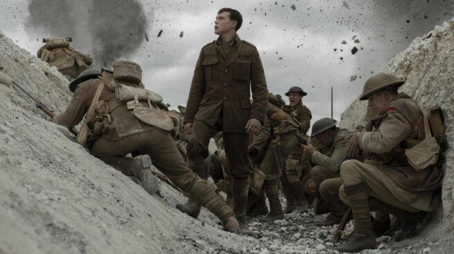

Como consecuencia de la Primera Guerra Mundial, desaparecieron los imperios alemán; austrohúngaro; Imperio otomano y ruso. Este último se vio fracturado por la Revolución rusa que tuvo lugar en 1917, movida, entre otras razones, por la participación de este Imperio en la Gran Guerra. El mapa europeo se reestructuró y aparecieron naciones como: Checoslovaquia, Hungría, Estonia, Finlandia, Letonia, Lituania, Polonia y Yugoslavia. Además, Alemania sufrió grandes pérdidas territoriales que, numéricamente, representaron el 13% de sus dominios solo en Europa. Alemania debió entregar Alsacia y Lorena a Francia; a Bélgica entregó las regiones de Eupen y Malmedy; a Dinamarca, el norte de Schleswig; a Polonia, algunas regiones de Prusia Occidental y Silesia; a Checoslovaquia, Hultschin; a Lituania, Memel y, finalmente, a la Sociedad de Naciones le cedió el control de Danzig y la región industrial de Saar, que quedó bajo su administración por unos tres lustros. En términos económicos, la Primera Guerra Mundial significó grandes pérdidas de dinero y de recursos. Lo primero fue la destrucción del parque industrial, especialmente el alemán. En términos generales, europa se vio expuesta a un aumento de la brecha social entre ricos y pobres, derivada tanto de las pérdidas materiales como de la discapacidad física tras el combate, la viudez y la orfandad inducidas. Las sanciones económicas establecidas contra Alemania dejarían sumido al país en la pobreza extrema y dificultaría su recuperación, lo que generaría un gran malestar y resentimiento en contra de los países aliados. Las consecuencias de la Primera Guerra Mundial no fueron solo económicas o materiales. Nuevos discursos ideológicos aparecerían en la escena. A la extrema izquierda, la expansión del comunismo, que había ascendido por primera vez al poder con la Revolución rusa de 1917, desde su formulación teórica en el año 1848. A la extrema derecha, el nacimiento del nacional-socialismo (nazismo) en Alemania y del fascismo en Italia, con sus respectivos focos de irradiación.
GRANDES BATALLAS |
||||
|---|---|---|---|---|
CONTEXTO Durante la Primera Guerra Mundial, un sinfín de batallas destruyeron la faz de Europa. Nunca el mundo había visto una destrucción como la generada por los enfrentamientos entre las tropas aliadas y las filas de las potencias centrales. La innovaciones tecnológicas trajeron consigo armamentos mucho más potentes, al tiempo que destructivos, y transformaron el desarrollo de las guerras posteriores. Acá mostraremos cuáles fueron las batallas más importantes de la que fue conocida, hasta el inicio de la Segunda Guerra Mundial, como la Gran Guerra.
|
||||
BATALLAS |
¿QUÉ FUERON? |
|||
Batalla de Tannemberg |
El ejército ruso, comandado por el general Alexander Samsonov, avanzó lentamente por el sureste de la provincia. El objetivo era unir fuerzas con el general Paul von Rennankampf, que avanzaba en el noreste. |
|||
Primera batalla del Marne |
En esta batalla, los franceses se dieron cuenta de la importancia de usar trincheras en la guerra. Antes, encontraron deshonroso para un soldado cavar un hoyo y esconderse durante la pelea. |
|||
Batalla de Gallipoli |
Los británicos atacaron a los turcos el 19 de febrero de 1915. Se lanzaron bombardeos en el estrecho de los Dardanelos con el objetivo de avanzar y tomar la Península de Gallipoli. |
|||
Batalla de Jutlandia |
Esta fue la batalla naval más grande de la Primera Guerra Mundial y la historia. Involucró a las dos flotas navales más grandes del mundo, la británica y la alemana, en una disputa en alta mar. |
|||
Batalla de Verdun |
El objetivo era atacar a los franceses y tratar de negociar la paz por separado. La estrategia salió mal y hubo una reacción intensa de los franceses, que surgieron ganadores. |
|||
Batalla de Somme |
La batalla de Somme es considerada una de las más sangrientas de la Primera Guerra Mundial. El 6 de diciembre de 1915, los Aliados decidieron tomar una acción conjunta contra los alemanes cuyo propósito era contener el avance del ejército alemán en el área. |
|||
EXPANSIÓN MILITAR Como consecuencia de estas tensiones, las naciones europeas adoptaron medidas tanto en política interior como exterior entre 1871 y 1914 que, a su vez, aumentaron el peligro de un conflicto; mantuvieron numerosos ejércitos permanentes, que ampliaban constantemente mediante reclutamientos realizados en tiempo de paz, y construyeron naves de mayor tamaño. Gran Bretaña, influida por el desarrollo de la Armada alemana, que se inició en 1900, y por el curso de la Guerra Ruso-japonesa, modernizó su flota bajo la dirección del almirante sir John Fisher. El conflicto bélico que tuvo lugar entre Rusia y Japón había demostrado la eficacia del armamento naval de largo alcance. |
||||